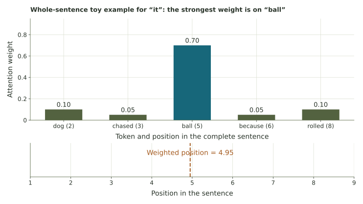
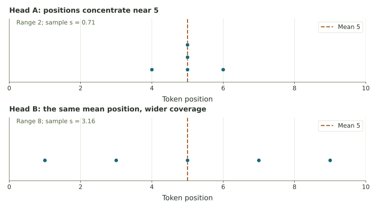

Weighted positions and concentrated attention
Practice sums of weights, weighted feature values, and the difference between a common mean and a common spread.
A whole sentence and a small set of weights
Consider “The dog chased the ball because it rolled.” Number the words from 1 to 8. The word “it” is in position 7. Suppose a toy attention calculation combines information from these five positions:
| Token | Position | Weight |
|---|---|---|
| dog | 2 | 0.1 |
| chased | 3 | 0.05 |
| ball | 5 | 0.7 |
| because | 6 | 0.05 |
| rolled | 8 | 0.1 |
This is a whole-sentence illustration: all the words are already available. “Rolled” comes after “it.” A model generating text one token at a time could not use that future word while predicting it; such attention masks out future positions. The table’s numbers illustrate an unmasked combination, not that next-token situation.
The assigned weights do not establish what a real model would do with this sentence. They let us practice the weighted-average calculation.
1. Check the weights
2. Find the largest weight
3. Calculate a weighted position
Use 0.10(2) + 0.05(3) + 0.70(5) + 0.05(6) + 0.10(8).

4. Blend a feature
Four tokens carry feature values 10, 20, 30, and 40. Their corresponding weights are 0.10, 0.20, 0.60, and 0.10.
5. The same center, different concentration
Two toy heads focus on these five positions, treating the five listed observations equally:
| Head | Positions |
|---|---|
| A | 4, 5, 5, 5, 6 |
| B | 1, 3, 5, 7, 9 |

Source: Attention Is All You Need, Sections 3.2 and 3.2.3, for weighted value combinations and the distinction between encoder and masked decoder attention.